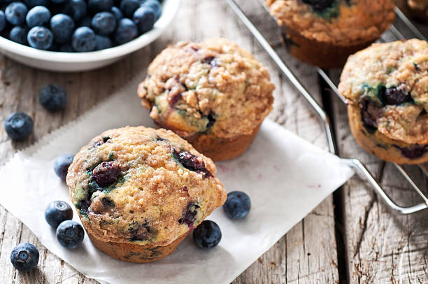

Muffins Recipe
This is my favorite customizable muffin recipe! It's so simple and easy to make, and you can add whatever mix-ins you like!

Ingredients:
- 1 cup AP flour
- 1/2 cup sugar
- 3 large eggs
- 1/4 stick unsalted butter, melted
- 1/2 cup milk (or water)
- 2 tbsp baking powder
- 1 tbsp vanilla extract
- A pinch of salt
- Your choice of mix-ins
Steps:
- Mix together flour, salt, sugar, and baking powder in a medium bowl.
- Combine egg, butter, milk, and vanilla extract in a separate bowl.
- Slowly add dry ingredients into wet ingredients. Mix until almost combined.
- Add in your mix-ins. Mix until just combined.
- Preheat oven to 350 degrees F.
- Line a muffin tray with muffin liners.
- Pour muffin batter into muffin tray until 2/3 full.
- Bake for 25 minutes or until an inserted toothpick comes out clean.
- Let the muffins cool on the pan for 10 minutes.
- Remove muffins from pan and place onto cooling rack to further cool.
- Enjoy your delicous customizable muffins!
Go back home